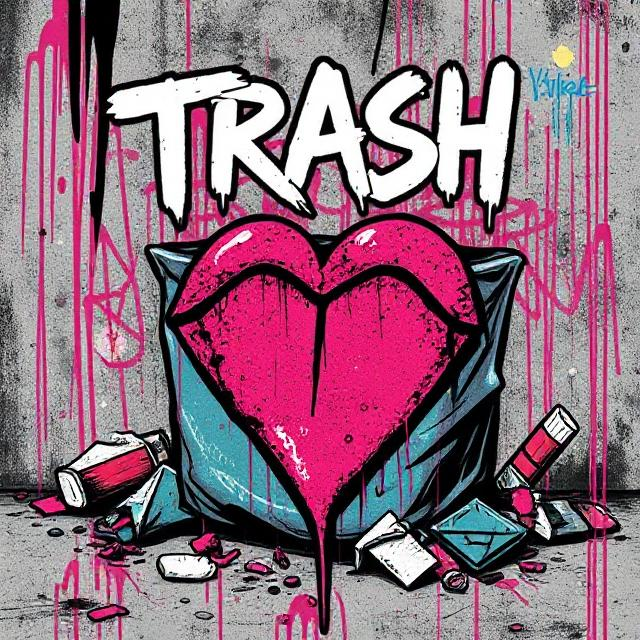
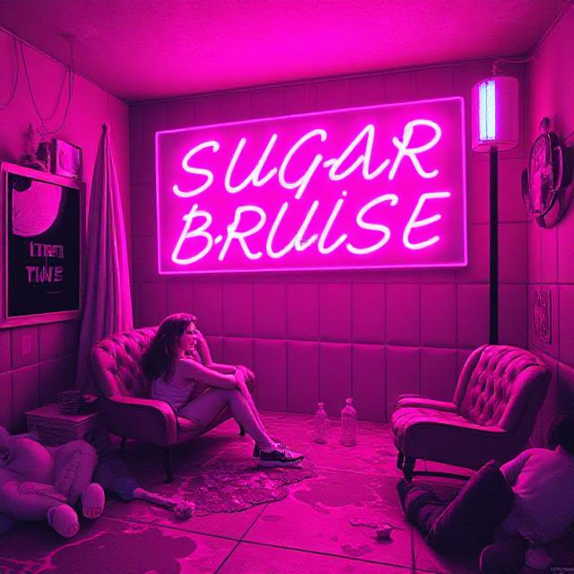

Violet Riot
Electric Lullaby (Instrumental)
Rose Strings (Instrumental)
Deep Dive (Instrumental)
Velvet Crunch (Instrumental)
Skinned Knees (Instrumental)
Broken Tempo (Instrumental)
Confession No. 5 (Accapela)
Bite Back (Accapela)
Trash
Gum on my Heel
Graffiti Lungs
Ashtray Heart
GlitterBug
Last Year's Lipstick
Half-Hearted Riot
Neon Confessions
City of Ashes
Dust & Diamonds
Love on Mute
Sunset Riot
Glitter Scar
Echo After Midnight
Petal Gun
Safety off (Don't Love Me)
Bleed Slow
No Safety Word
Kickback
Petal Gun
Kiss the Barrel
Pink Chamber
Trigger Discipline
Exit Wound (I Love You)
Sugar Bruise
Candy Cigarettes
Sour Hearts Club
Teethmarks & Lipgloss
Dollhouse Collapse
Maraschino Mourning
Sugar Bruises
Pretty When I Cry
Bubblegum Blades
Pastel Trauma
Cotton Candy Silence
Lullaby for the Bitter Ones
Songbook: Violet Riot
Select a song to view its lyrics.